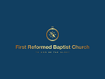

The Scriptures of the Old and New Testaments are fully inspired, inerrant, and serve as the supreme authority for faith and life. There is one God, eternally existing in three persons: Father, Son, and Holy Spirit. Jesus Christ was conceived by the Holy Spirit, born of the Virgin Mary, and is both true God and true man. Human beings were created in the image of God but sinned, incurring both physical and spiritual death, resulting in a sinful nature and guilt before God. Jesus died as a substitutionary sacrifice for our sins, and all who believe in Him are justified through His shed blood. We believe in the bodily resurrection of Jesus, His ascension into heaven, and His ongoing role as our High Priest and Advocate. Additionally, we affirm the personal and imminent return of Jesus Christ. All who receive Jesus by faith are born again of the Holy Spirit and become children of God. There will be a bodily resurrection of both the just and the unjust, leading to eternal blessedness for the redeemed and eternal damnation for those who reject salvation.
True transformation begins with a heart devoted to Christ. At First Reformed Baptist Church, we strive to embody His love, serve our community and grow together in faith.

Prayer is a cornerstone of the Christian faith, serving as a vital means of communication with God. At First Reformed Baptist Church, prayer is central to both individual and communal life.

Offerings represent an essential aspect of worship, reflecting a believer's gratitude and commitment to God. At First Reformed Baptist Church, the act of giving is seen as an extension of faith—an acknowledgment that all blessings come from God.
Blessings are both a gift from God and a result of faithful living. The church teaches that as believers engage in prayer and give generously, they open themselves to receive God’s abundant blessings—spiritually, emotionally, and materially.
59b Regent Road, Lumley.
Freetown, Sierra Leone
+ (232) 99-748-257
+ (232) 75-246-482
emmanuelskomba@yahoo.com